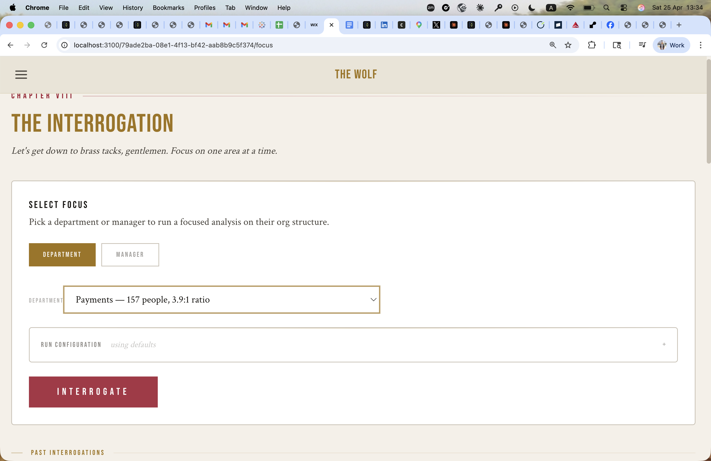
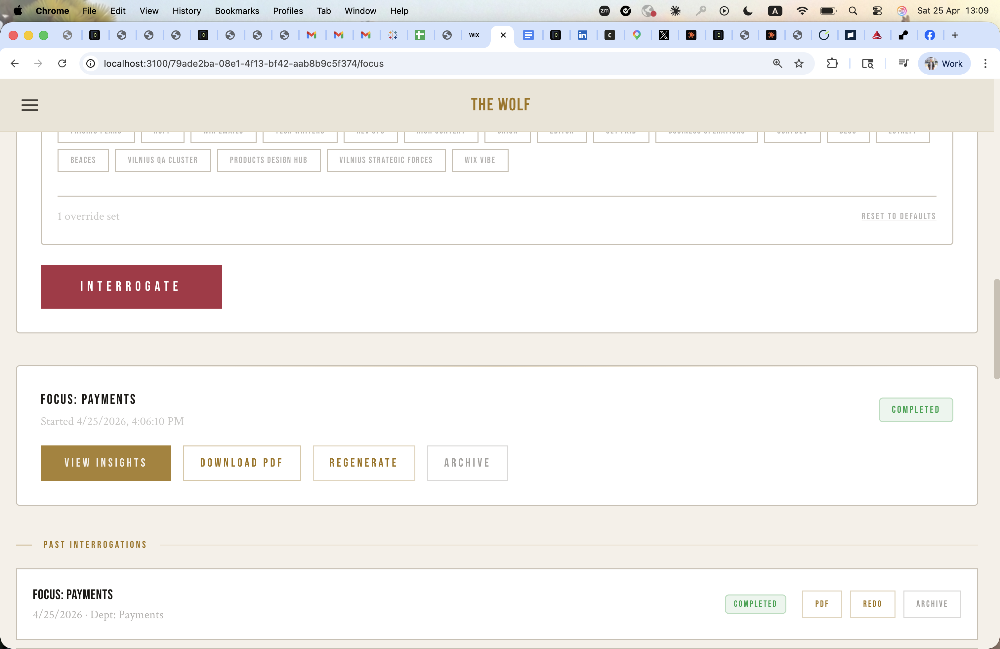
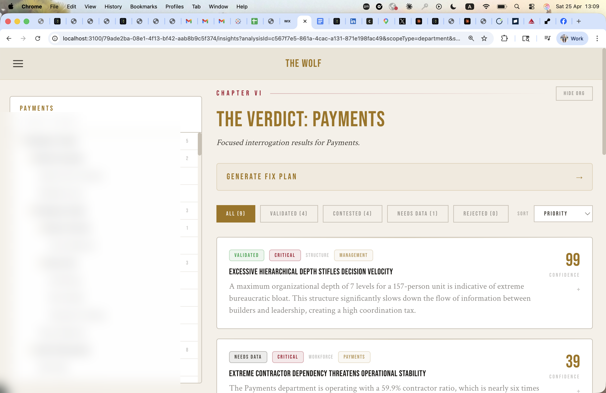
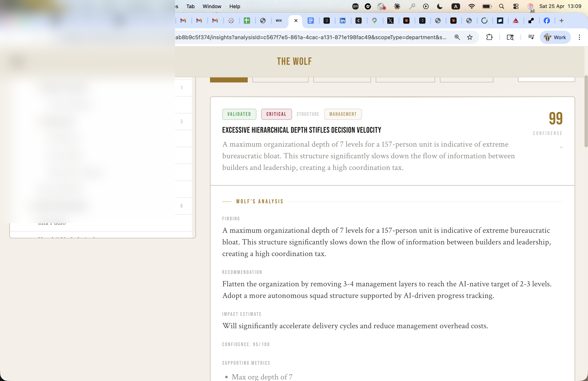
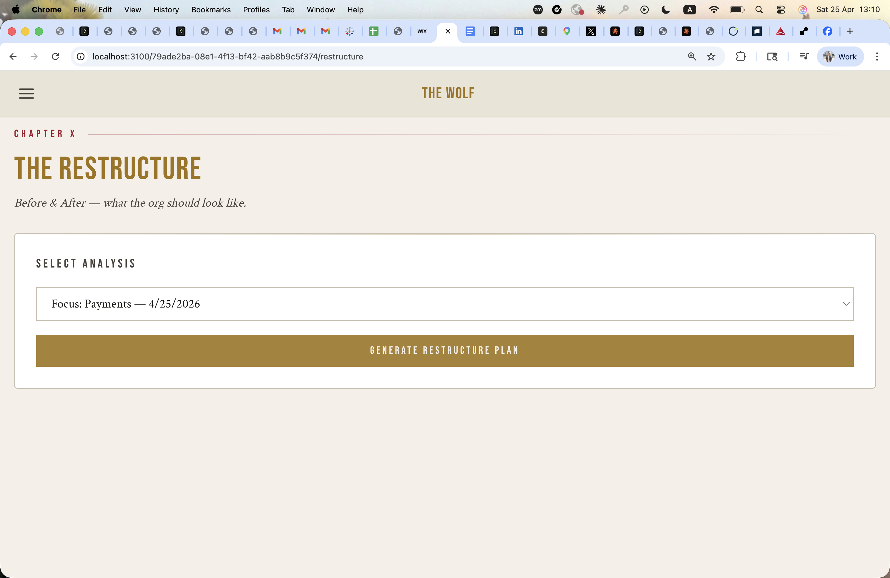
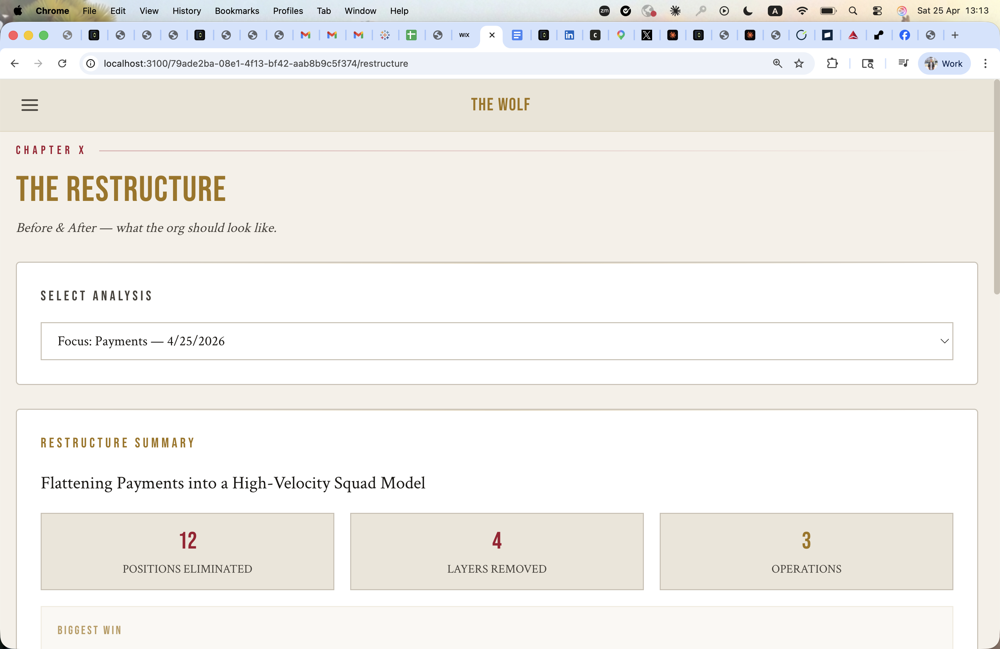
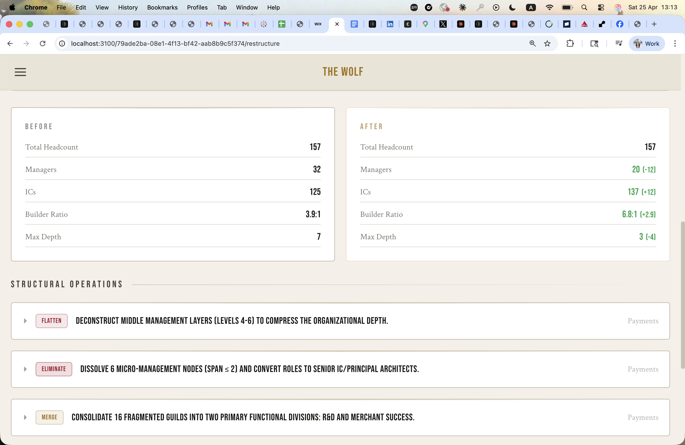
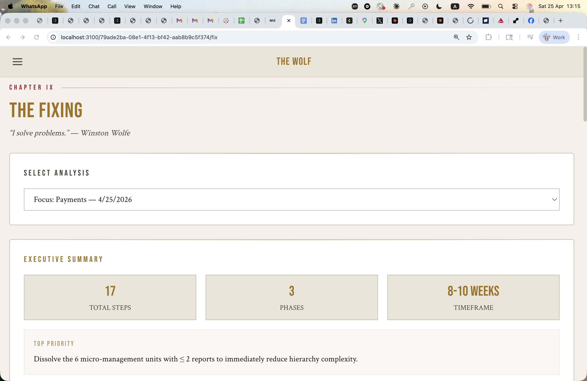
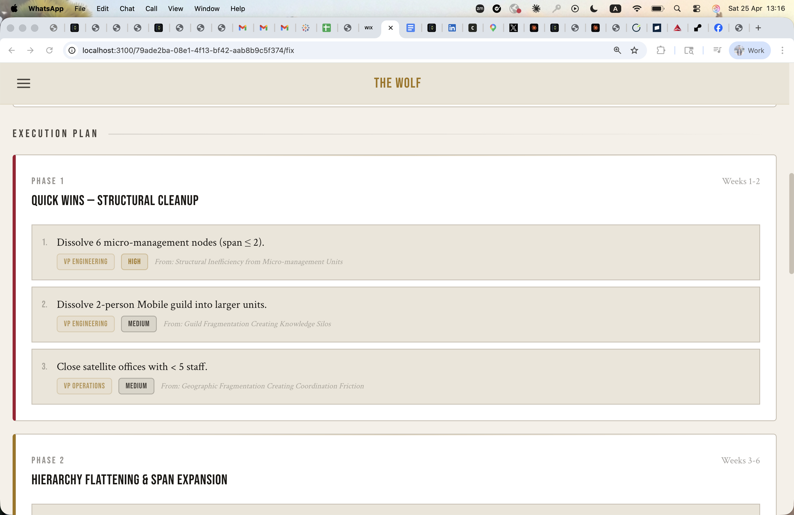
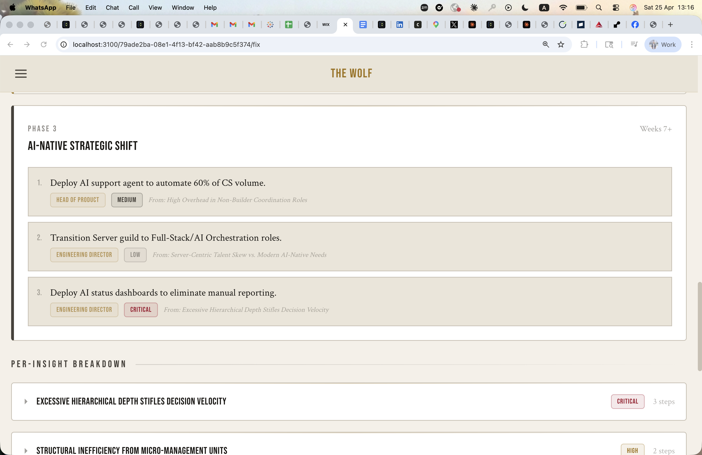

Toggle between Department and Manager tabs to choose your analysis scope.
Each department shows headcount and builder ratio. Here: Payments — 157 people, 3.9:1 ratio.
Hit the red Interrogate button to launch the Wolf + Mirror dual-agent analysis on the selected scope.

Once complete, you get View Insights, Download PDF, Regenerate, and Archive actions.
Previous analyses are listed below with their scope, date, and insight count for quick access.

The left panel shows the department's org tree — 157 people, 32 managers. Real names, titles, and reporting lines.
9 insights filtered by consensus: Validated (4), Contested (4), Needs Data (1). Filter and sort as needed.
When you're ready, hit Generate Fix Plan to turn validated insights into an actionable remediation plan.

The Wolf's detailed analysis of the organizational issue — what it found, backed by data from your uploaded dataset.
Specific, actionable recommendation with impact estimate and confidence score (95/100 in this case).
Quantitative evidence: headcount, spans of control, ratios, and comparisons that back the Wolf's assessment.

Choose which completed analysis to use as the basis for a restructure plan. Each shows its scope and date.
Click Generate Restructure Plan to have the Architect agent design a before/after org transformation.

12 positions eliminated, 4 management layers removed, 3 structural operations — the headline numbers for leadership review.
"Flattening Payments into a High-Velocity Squad Model" — the Architect agent names the transformation strategy.

Managers: 32 to 20. ICs: 125 to 137. Builder Ratio: 3.9:1 to 6.8:1. Max Depth: 7 to 3. Concrete measurable change.
Three structural operations: Flatten (layers), Eliminate (roles), Merge (teams). Each with affected positions and rationale.

17 action steps across 3 phases, estimated 8-10 weeks. Generated from the validated insights.
The most urgent fix is highlighted at the top — the single action item leadership should start with immediately.

Weeks 1-2 — Structural cleanup. Immediate, low-risk actions like eliminating unnecessary management layers.
Weeks 3-6 — Hierarchy flattening and span expansion. Bigger structural changes that reshape the org chart.

Weeks 7+ — AI-native transformation. Long-term moves like replacing coordination roles with AI tooling.
Every original insight is mapped to its specific fix steps. Full traceability from problem to solution.